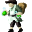

Nanath¶Where to find Nanath: Fallhaven: fallhaven_derelict2
{ .sprite }
| Type | NPC (can be spoken to; cannot be attacked) |
| Role | Starts Troubling times |
| Found in | Fallhaven |
| Entry ID | nanath |
| Introduced | v0.8.13 |
Quests¶
- Troubling times: stages 10, 20, 30, 40, 50, 82, 90, 95, 105, 115, 150, 160, 193, 302, 310
Dialogue simulator¶
Set the quest stages, items and other conditions that apply to your game, then start the conversation with Nanath. The simulator applies the game's own rules: it performs the same silent checks, offers only the options that would be shown in the game, and applies their effects (quest stages, items handed over, rewards) as the conversation proceeds.
Rules verified against v0.8.18 game code (ConversationController.java) and dialogue data.
Dialogue (55 lines)
What the dialogue says, exactly as in the game files. Lines are listed once; links jump to the line a choice leads to.
nanath (silent check: the first matching branch below is taken)
- branch 1 (if reached stage 310 of Troubling times) → nanath_310
- branch 2 (if reached stage 290 of Troubling times) → nanath_290
- branch 3 (if reached stage 270 of Troubling times) → nanath_200
- branch 4 (if reached stage 160 of Troubling times) → nanath_190
- branch 5 (if reached stage 110 of Troubling times) → nanath_150
- branch 6 (if reached stage 95 of Troubling times) → nanath_110
- branch 7 (if reached stage 70 of Troubling times) → nanath_70
- branch 8 (if reached stage 70 of Wanted men) → nanath_10
- branch 9 (if reached stage 77 of Wanted men) → nanath_12
- branch 10 (if reached stage 80 of Wanted men) → nanath_20
- branch 11 (if reached stage 57 of Wanted men; NOT reached stage 70 of Wanted men) → nanath_20
nanath_310 Nanath: “Stay safe, kid.”
nanath_290 Nanath: “You were obviously successful. We seem to be inconspicuous again.”
- Next → nanath_300
nanath_200 Nanath: “Hi kid.”
- “I have got Luthor's ring.” → nanath_272
nanath_190 Nanath: “Have you found Seraphina yet?”
- “No.” (if NOT reached stage 180 of Troubling times) → nanath_182
- “Yes. She told me I would need Luthor's key.” (if reached stage 180 of Troubling times; reached stage 192 of Troubling times; NOT reached stage 193 of Troubling times) → nanath_192
- “Yes. She told me I would need Luthor's key.” (if reached stage 193 of Troubling times) → nanath_193
nanath_150 Nanath: “How progresses the task? I hope you've done it? We're in a pickle here, kid. No time to dawdle.”
- “Dawdle! Do it yourself if you know everything better!” → nanath_152
- “Well ...” → nanath_160
nanath_110 Nanath: “Have you found Luthor's ring yet?” — effects: sets stage 95 of Troubling times
- “I am looking for it now.” (if NOT reached stage 100 of Troubling times) → conversation ends
- “I have no idea where to look any more.” (if reached stage 100 of Troubling times) → nanath_120
nanath_70 Nanath: “Oh, back again? I hope you bring good news.”
- “Maybe. Talion, a Shadow priest, has put the Striking Spectacle Shadow spell on us.” (if NOT reached stage 82 of Troubling times) → nanath_72
- “I have been looking for the things for Talion.” (if reached stage 82 of Troubling times) → nanath_92
- “About Luthor's ring ...” (if reached stage 95 of Troubling times; NOT reached stage 105 of Troubling times) → nanath_110
- “I am still looking for Seraphina.” (if reached stage 105 of Troubling times) → nanath_140
nanath_10 Nanath: “You? How dare you show your face?” — effects: sets stage 10 of Troubling times, sets stage 20 of Troubling times
- “Why?” → nanath_18
nanath_12 Nanath: “You? How dare you show your face?” — effects: sets stage 10 of Troubling times, sets stage 30 of Troubling times
- “Why?” → nanath_18
nanath_20 Nanath: “Hi there. I am Nanath, the oldest and most experienced man in the guild. No need to introduce yourself, I know who you are, $playername.”
- “Oh. Hi Nanath. You look scared.” → nanath_22
nanath_300 Nanath: “Good job! I didn't think you could do it. But you did.”
- “Yes. The search was a nice change.” → nanath_302
nanath_272 Nanath: “Then take it to Talion. Quickly.”
nanath_182 Nanath: “Let me think: Fallhaven would be too near. Sullengard, Stoutford, Vilegard and Prim come to my mind. And Loneford or Brimhaven, of course.” — effects: sets stage 160 of Troubling times
- “OK.” → nanath_184
nanath_192 Nanath: “I spoke to Umar. He already suspected that you would need this key.”
- Next → nanath_192a
nanath_193 Nanath: “I have given it to you already, forgotten?”
- “Oh, right. I'm ashamed of myself for trying to trick you.” → nanath_194
nanath_152 Nanath: “Calm down. I'm just nervous. Did you make any progress?”
- “Yes.” → nanath_160
nanath_160 Nanath: “Tell me.”
- “Seraphina doesn't trust me.” (if reached stage 110 of Troubling times; NOT reached stage 140 of Troubling times) → nanath_170
- “Seraphina has disappeared. She's scared to unleash some monsters which she says Umar and her sealed up.” (if reached stage 140 of Troubling times; NOT reached stage 180 of Troubling times) → nanath_180
- “About Seraphina ...” (if reached stage 180 of Troubling times) → nanath_190
nanath_120 Nanath: “Looks like it ended up being kept somewhere dangerous.”
- “Seems so.” → nanath_122
nanath_72 Nanath: “And?”
- “And ... I think I have to talk to Talion again.” (if NOT reached stage 80 of Troubling times) → nanath_80
- “Talion said he can help dispel it.” (if reached stage 80 of Troubling times) → nanath_80
nanath_92 Nanath: “Do you already have all of the items?”
- “I don't have Troublemaker's ring yet.” (if NOT carry 1× Troublemaker's ring) → nanath_94
- “I don't have the Ring of backstabbing yet.” (if NOT carry 1× Ring of backstabbing) → nanath_94
- “I don't have the Villain's ring yet.” (if NOT carry 1× Villain's ring) → nanath_94
- “I don't have the Tears of the Shadow yet.” (if NOT carry 1× Tears of the Shadow) → nanath_94
- “I have already brought the 4 easier things.” (if carry 1× Troublemaker's ring; carry 1× Ring of backstabbing; carry 1× Villain's ring; carry 1× Tears of the Shadow) → nanath_100
nanath_140 Nanath: “Then go and find her, now.”
nanath_18 Nanath: “You betrayed the Guild over the task with Defy. Get out!”
nanath_22 Nanath: “Well, one of our ex-clients, Lady Dameni, has put an adverse Shadow spell on us.”
- “So?” → nanath_24
nanath_302 Nanath: “Sly Seraphina has already been here and returned Luthor's key to Umar. So the room with those dangerous creatures is sealed again.” — effects: sets stage 302 of Troubling times, clears stage 20 of troubling_times_nd (hidden flag)
- “So quick?” → nanath_304
nanath_184 Nanath: “She must be found. By any means.”
- “Yes, sir” → conversation ends
nanath_192a Nanath: “Here you have it, handle it carefully.” — effects: sets stage 193 of Troubling times, gives 1× Key of Luthor
- “Of course.” → conversation ends
nanath_194 Nanath: “I truly hope you are.”
nanath_170 Nanath: “She must. Go to Umar. He's the only one she'll listen to.” — effects: sets stage 115 of Troubling times
- “OK.” → conversation ends
nanath_180 Nanath: “So, that's what Umar is hush-hush about.”
- “He could really be more talkative sometimes.” (if NOT reached stage 180 of Troubling times) → nanath_181
nanath_122 Nanath: “Then ... only one person may know: Fanamor's friend Sly Seraphina.”
- “Sly Seraphina? Where can she be found?” (if NOT reached stage 38 of sullengard_nondisplay (hidden flag)) → nanath_130
- “On no! Not Seraphina! I refuse to talk to her.” (if reached stage 38 of sullengard_nondisplay (hidden flag)) → nanath_132
nanath_80 Nanath: “What a relief.”
- Next → nanath_82
nanath_94 Nanath: “Well, then go and find it. Hurry now!”
nanath_100 Nanath: “Good, that's a start.”
- “I expect to be reimbursed of course.” → nanath_102
- “I am glad you approve.” → nanath_102
nanath_24 Nanath: “It makes us noticeable, and thus vulnerable to being caught - paralyzing our honest bread and butter work.”
- “Oh. Sounds awful.” → nanath_26
nanath_304 Nanath: “Sure. You should know her by now.”
- Next → nanath_308
nanath_181 Nanath: “Anyway, we must find her. I know some of her usual hidings.” — effects: sets stage 150 of Troubling times
- Next → nanath_181a
nanath_130 Nanath: “She's the thief near the Sutdover bridge.”
- “Sutdover bridge? So I'll look for her to the south.” → nanath_136
nanath_132 Nanath: “You must. For the Guild!”
- “All right, I hate to, but for the greater good I'll go.” → nanath_136
nanath_82 Nanath: “What does he want in return?”
- “Lady Dameni paid him. Talion wants 50,000 gold to dispel us.” → nanath_84
nanath_102 Nanath: “Umar will refund you, but only if you succeed.” — effects: sets stage 90 of Troubling times
- Next → nanath_110
nanath_26 Nanath: “Umar wants me to handle it. He wants me to get it dispelled, so that the Thieves' Guild can work again.”
- “Ah, OK then.” → nanath_28
nanath_308 Nanath: “Umar asked me to reimburse you for your expenses. And something as a thank you. So here are 75,000 shining pieces of gold.” — effects: sets stage 310 of Troubling times, gives 75000× Gold coins
- “Thank you.” → nanath_310
nanath_181a Nanath: “She prefers to be close to a town so she can easily stock up.”
- “Makes sense.” → nanath_182
nanath_136 Nanath: “Then it's all settled. Go and find her, now.” — effects: sets stage 105 of Troubling times
nanath_84 Nanath: “That's a lot, but it was to be expected. It's good that he doesn't want more.”
- “Well ... he also wants the following items: The Villain's ring, Troublemaker's ring, the Ring of backstabbing and the…” → nanath_86
nanath_28 Nanath: “The thing is I don't know much about the Shadow or any other so-called powers. My life has been being an honest thief, a score here, a score there - I don't tangle with the supernatural stuff.”
- Next → nanath_30
nanath_86 Nanath: “That's fine with me.”
- “And - most important - Luthor's ring.” → nanath_90
nanath_30 Nanath: “Can't anyone help?” — effects: sets stage 10 of Troubling times, sets stage 40 of Troubling times
- “I can help. I've had some dealings with the Shadow.” → nanath_32
nanath_90 Nanath: “What?! He must be crazy!” — effects: sets stage 82 of Troubling times
- Next → nanath_92
nanath_32 Nanath: “Really? Like what?”
- “Sorry, hush-hush stuff around Loneford and Vilegard.” → nanath_34
nanath_34 Nanath: “Of course.”
- “You want my help?” → nanath_40
nanath_40 Nanath: “First things first, how can we know the nature of the spell?”
- Next → nanath_42
nanath_42 Nanath: “Or its name?”
- “Hmm ...” → nanath_44
nanath_44 Nanath: “Maybe talking to a Shadow priest may help?” — effects: sets stage 50 of Troubling times
- “I'll see what I can do.” → conversation ends
Version history¶
| Version | Change |
|---|---|
| v0.8.13 | Added Dialogue: 55 lines added |
| v0.8.18 | Dialogue: 2 lines changed · text: “Umar asked me to reimburse you for your expenses. And something as a …” → “Umar asked me to reimburse you for your expenses. And something as a …” |
Verified against v0.8.18 and every earlier release back to v0.7.0 (game data compared release by release).
Technical information
| Entry ID | nanath |
| Spawn group | nanath |
| Loot table | – |
| Conversation | nanath |
| Faction | – |
| Movement | – |
| Icon | monsters_newb_1:41 |
| Defined in | res/raw/monsterlist_troubling_times.json |
Raw data:
{
"id": "nanath",
"name": "Nanath",
"iconID": "monsters_newb_1:41",
"monsterClass": "humanoid",
"spawnGroup": "nanath",
"phraseID": "nanath"
}
Community notes¶
Written by players, not generated from game data. Observations: what players notice in-game · Lore: the in-world story · Trivia: real-world facts, references, development history · Theory / speculation: unconfirmed ideas; may just be unfinished content
Observations¶
No notes yet. Contributions are welcome: add a note.
Lore¶
No notes yet. Contributions are welcome: add a note.
Trivia¶
No notes yet. Contributions are welcome: add a note.
Theory / speculation¶
No notes yet. Contributions are welcome: add a note.
Data from v0.8.18